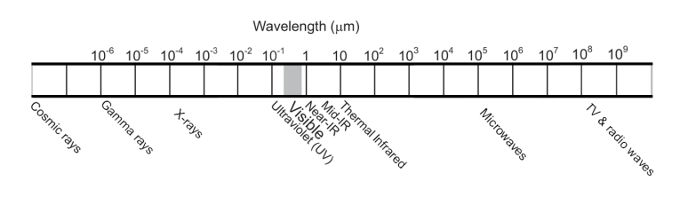
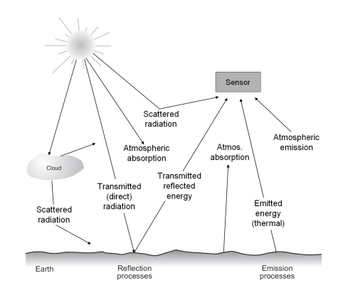
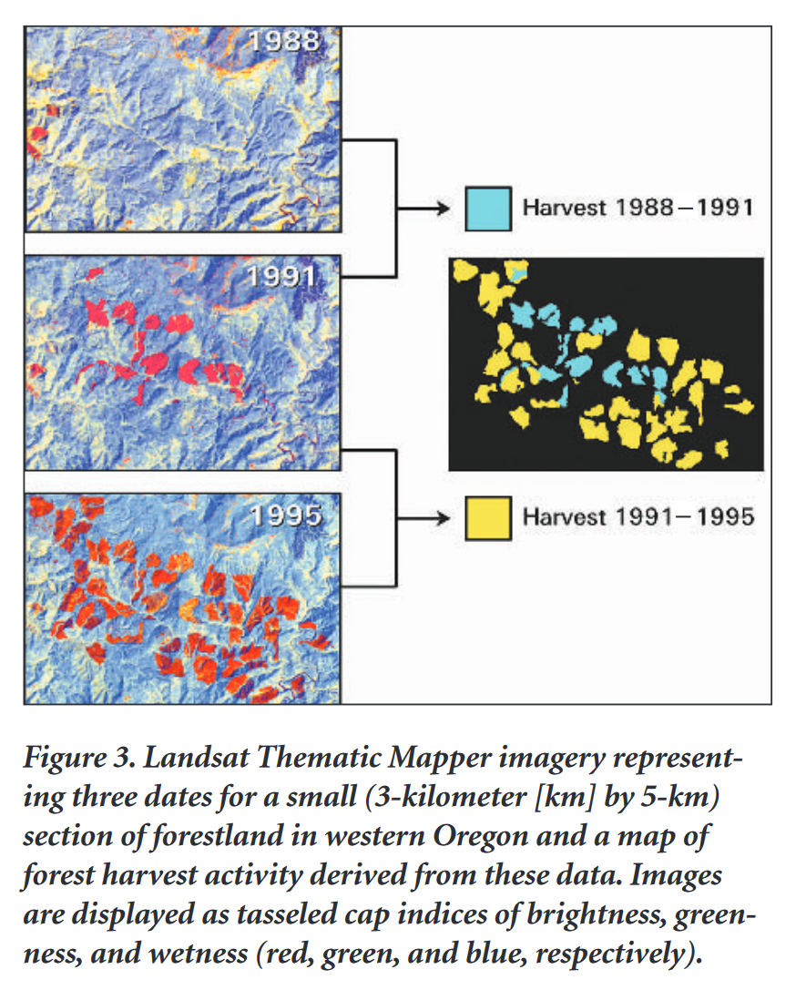
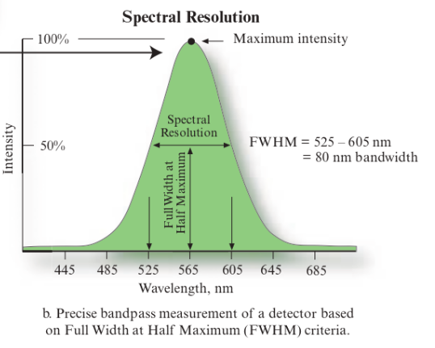

1 Introduction to Remote Sensing
The topic of this week’s learning diary are an introduction to remote sensing, the principles of EMR, types of satellites and sensors, and sources of remote sensing data.
The practical session for this week introduced methods for extracting open access remote sensing data, including Sentinel data from the ESA’s Copernicus Open Access Hub and Landsat data from the USGS EarthExplorer.
1.1 Summary
There is a wide variety of types of remote sensors and remote sensing data, and an equally wide variation in application. Some examples include:
| Earth Observation Data Source | Operator | Application Examples |
|---|---|---|
| Dynamic World | Google Earth Engine (GEE) app, developed jointly by Google and the World Resources Institute. | Real-time, high resolution (~10m) land cover |
| Landsat | NASA/USGS |
|
| Sentinel | ESA (European Space Agency) |
|
1.1.1 What is remote sensing?
At its simplest, remote sensing is the collection of data or information about an entity (such as an object or geographic area) from a distance. In practice, this usually refers to the use of airborne or orbiting sensors designed to measure certain properties of electromagnetic energy exiting an object/area (Jensen 2015).
The Electromagnetic Spectrum (EMS)
Electromagnetic radiation is the flow of energy travelling at the speed of light. It encompasses a spectrum that includes visible light, radio waves, and x-rays, among others, which have different scales of wave frequency and intensity (amplitude).
Remote sensors are often designed to measure a specific band of the electromagnetic spectrum, such as the visible light spectrum or near infrared (NIR).
Different materials (physical, biological, chemical) reflect and absorb energy at different points along the spectrum; therefore different sections of the EMS are relevant for different applications. For example, analysing NIR radiation can help to identify vegetation in earth observation data, and even the health or ‘stress’ state of the plant (Tempfli et al. 2009), in ways that just analysing the visible spectrum is unable to.

Radiation (usually from the sun) is reflected by an object and this reflected energy is then detected by a remote sensor. However, there are several processes that affect and transform this energy due to interactions with the Earth’s surface and the atmosphere before the energy reaches the sensor. In many cases, scattering of radiation in the atmosphere requires image correction before the data can be used. This process is covered in Section 3.1.

1.1.2 Types of remote sensing
| Type | Details | Examples |
|---|---|---|
| Passive | Use energy that is available in the environment - in most cases, this is reflected energy from the sun. | Most common form of remote sensor, includes Landsat, SENTINEL |
| Active | Emit an energy source and then detect the reflection of this energy from the remote surface. | RADAR, LiDAR, SAR |
In addition to the two types of remote sensing data, the data itself can be broken up into four metadata attributes:
Spatial Resolution: the size of a raster cell (pixel) projected onto the ground. For example, a single pixel might represent a 10m x 10m area, or a 100m x 100m area.
Spectral Resolution: the EMR bands that the data is recorded in (e.g. the red, green and blue bands of the visible light spectrum). Hyperspectral data refers to remote sensors that record an almost continuous observation across a range of the EMR spectrum, as opposed to discrete layers for a certain band region.
Radiometric Resolution: the range of possible values for a raster cell, expressed in units of bits (e.g. 8-bit, 12-bit). Describes the ability of the sensor to differentiate between small differences in energy.
Temporal Resolution: the frequency at which the data is collected (e.g. every few hours, every 16 days, yearly)
1.2 Application
This week’s practical task involved downloading Sentinel data and Landsat data to investigate using QGIS and SNAP software, including the application of a tasseled-cap transformation. The tasseled-cap transformation emerged from the development of spectral vegetation indices (SVIs) using multispectral data from the original Landsat mission, launched in 1972 (Cohen and Goward 2004). SVIs are a key tool in ecological and agricultural monitoring using remote sensing data, having the benefit of greater sensitivity to vegetation phenology (i.e. the periodic changes in plant growth across seasons) than analysis of individual spectral bands (Blair and Baumgardner 1977).
The tasseled-cap transformation is an extension of SVIs, first developed by Kauth and Thomas (1976), that is intended to capture spectral characteristics of soil, as opposed to just vegetation. It has been iteratively improved over time following improvements in the quality and availability of Landsat data, and is now commonly derived using three indices: Brightness, Greenness and Wetness (Cohen and Goward 2004; Crist and Cicone 1984).

Tasseled-cap transformation continues to be used in ecological applications, such as classifying forest structure (e.g., Dymond, Mladenoff, and Radeloff 2002) or tree species (Fassnacht et al. 2016), but has also been applied in urban land classification research - for example, in analysis of urban green space and soil characteristics (Ridd and Liu 1998).
1.3 Reflection
In this introduction week, the topics that stood out to me were the ingenuity of the technical aspects, bridging the gap between the physics of electromagnetic radiation and applying this knowledge to produce very powerful and informative datasets. These aspects include the mechanics behind a sensor’s spectral resolution, the translation of images into distributions of pixel values, and the additional considerations of using an active sensor.
When reading about a sensor, the band range will often be specified - e.g., a sensor may be described to observe the area of the electromagnetic spectrum between 525 - 605 nm (nanometres being a measure of the wavelength). However (and this is quite intuitive when you stop to think about it), the sensor does not actually have such a discrete cut-off at these wavelengths. Detectors are actually sensitive to a region of the EMS, where the maximum sensitivity is at the middle spot of this region, with sensitivity declining as it moves away from this point. The stated range given for sensors uses the Full Width at Half Maximum (FWHM) criteria, which is the range of wavelengths detected at 50% or greater intensity, as shown in the figure below, from (Jensen 2015).

I found conceptualising a remote sensing image as a simple distribution of pixel values a very powerful way to think about how the data can be analysed, understood, and transformed. A practical example of this is the use of histograms to ‘stretch’ the colours in an image, to improve differentiation and visual interpretation. The histogram of pixel values will commonly follow an approximately normal distribution, but a colour gradient will run linearly from the minimum to the maximum value of the dataset, which will result in a much ‘shallower’ gradient. Different methods can be used to rectify this, such as stretching or clipping to min/max.
Jensen et al. (Jensen 2015) warn that “powerful active remote sensor systems that emit their own electromagnetic radiation (e.g., LiDAR, RADAR, SONAR) can be intrusive and affect the phenomenon being investigated. Additional research is required to determine how intrusive these active sensors can be.” (p.8). I would be interested to investigate further what kind of research has been done in this area, or what kind of impacts active sensing methods are hypothesised to have. In which situation would the process of using an active sensor disturb the process being observed?